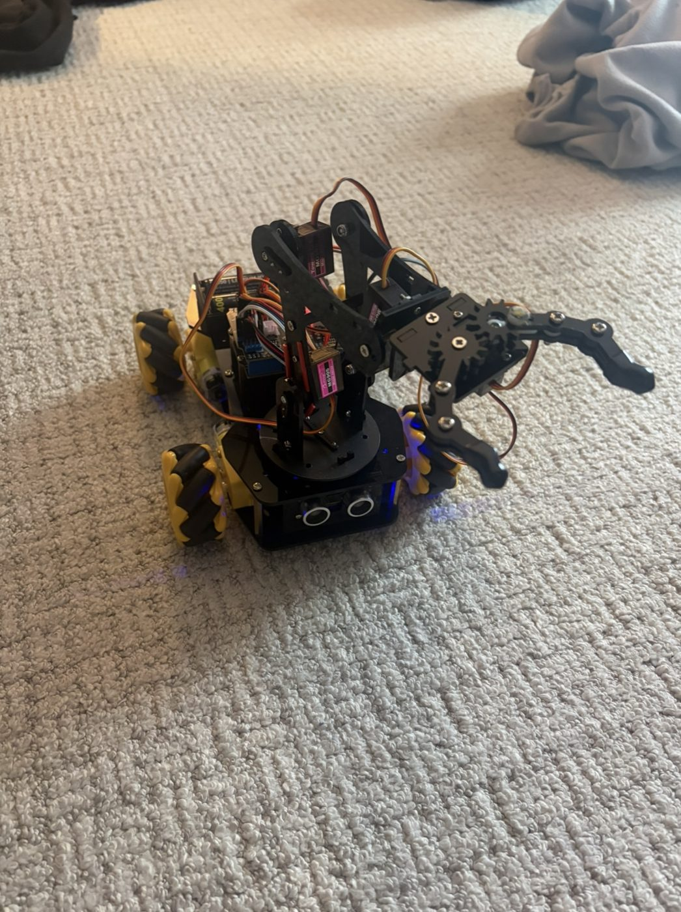
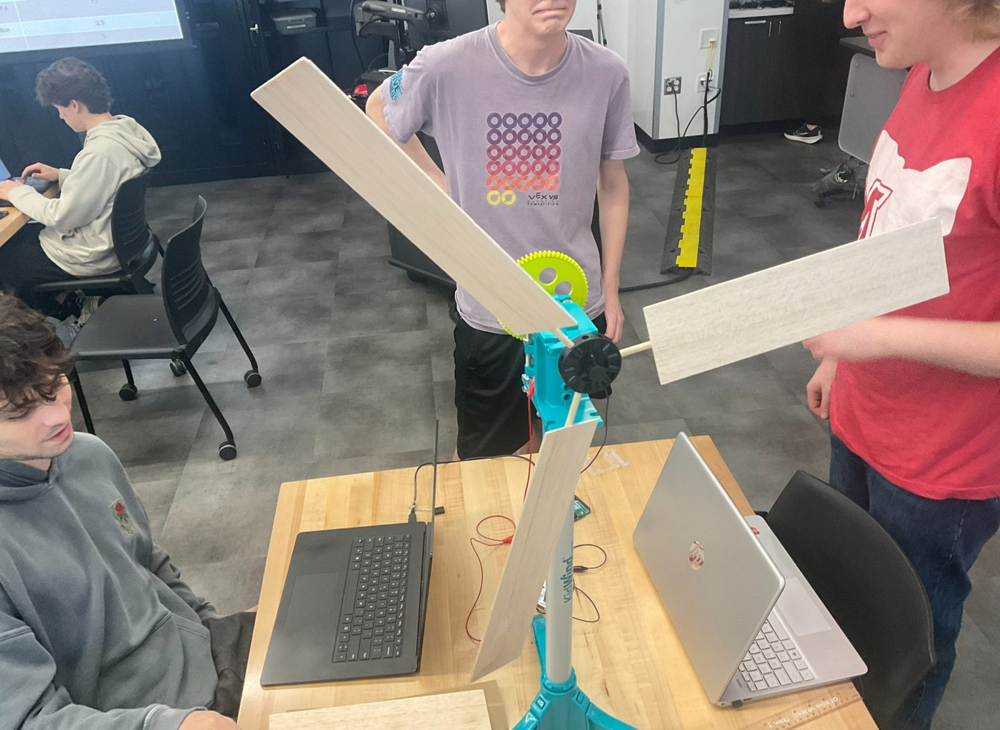
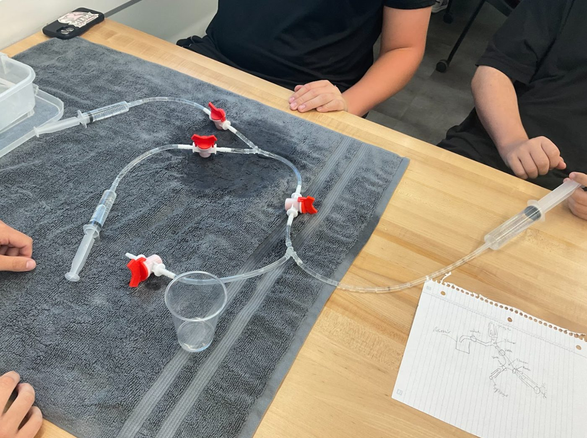

Mechanical engineering student with hands-on experience in robotics, renewable energy systems, and fluid mechanics — from mechanical assembly and wiring to MATLAB data analysis and embedded programming.
A look at what I've built. Click any project for the full story — photos, engineering details, and what I learned.

Assembled, wired, calibrated, and programmed an ESP32-based robot car with a multi-axis robotic arm — controlled over Bluetooth.
View project →
A 9-week team project building and optimizing a working wind turbine — blade geometry, materials, gear ratios, and real power data in MATLAB.
View project →
Designed a syringe-driven pump, split flow across a multiline network, and built a working hydraulic lift — with measured flow-rate analysis.
View project →